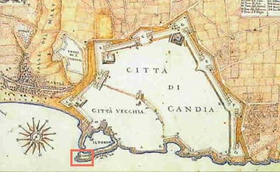

Οχυρώσεις του Χάνδακα
 Σαρακηνοί πειρατές κατέλαβαν την Κρήτη, για να τη χρησιμοποιήσουν σαν ορμητήριο για τις επιδρομές τους, τον 9ο αιώνα. Τότε οχύρωσαν την πόλη με το Φρούριο της Τάφρου (Rabdh el Khandak). Ο βυζαντινός αυτοκράτορας Νικηφόρος Φωκάς καθιέρωσε την ονομασία Χάνδακας. Οι Βενετοί επιλέγουν τον Χάνδακα για πρωτεύουσα του νησιού, που το ονομάζουν Κάντια, και ενισχύουν τα τείχη (1462). Η πόλη επεκτάθηκε έξω από αυτά και το λιμάνι οχυρώθηκε με δύο φρούρια. Το Καστέλι ή Πύργος του Λέοντος ή Μεγάλος Κουλές, είναι διώροφο και αποτελείται από 26 διαμερίσματα. Η άλλοτε κατοικία του Καστελάνου, των καπετάνιων και των αξιωματικών φιλοξενεί σήμερα πολιτιστικές εκδηλώσεις της πόλης. | ||